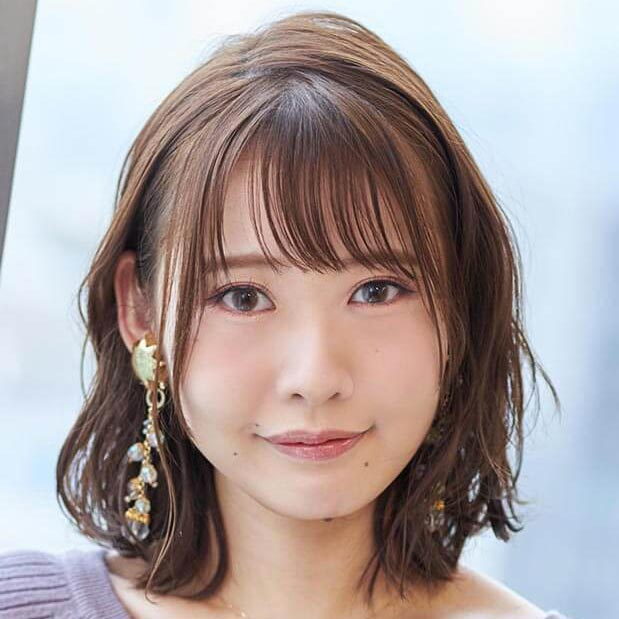

【声マガ・インタビュー】櫻庭 有紗
TOPICS
PROFILE
アーツビジョンに所属する櫻庭有紗さんは、青森県出身の9月18日生まれ。『sin七つの大罪』（サタン役）、『はねバド！』（石澤望役）、『ライフル・イズ・ビューティフル』（榎本こまち役）等に出演。2019年10月放送の『旗揚！けものみち』では、カーミラ役で出演。
手先が器用で小さい頃からモノ作りが大好きだったという櫻庭さん。音フェチの一面もあるそうで、ビーズや発泡スチロールの粒々をスライムに混ぜてこねる動画や揚げ物などを食べたときの咀嚼音を自撮りして、休憩時間にイヤホンで聴くのが癒しタイムなのだとか。そんな櫻庭さんに、声優をめざしたきっかけや日本ナレーション演技研究所（以下、日ナレ）で学んだこと、今後の目標について語っていただきました。
声で表現することが自分の武器かもと気づいた高校時代
声優という仕事を意識したのはいつ頃ですか？
中学2年の時、好きな漫画家の先生が、雑誌で仲良しの声優さんについて書いていたんです。それで声優という職業があることを知って、アニメを観る時に、なんとなく意識するようになりました。
では、声優をめざしたきっかけを教えてください。
中学時代、演劇部に所属していて、高校でも演劇を続けたかったんですが、残念ながら進学した高校の演劇部が廃部の状態で。でも、何かしら表現できる活動がしたいと思って、放送部に入って朗読を始めたんです。うちの学校は強豪校ではなかったので、一人でコツコツ朗読していたのですが、1年生の時に、高校の放送部を対象とした大きな大会で勝ち進んで、全国大会に出場することができまして。その時、ひょっとして、声で表現することは自分の武器なんじゃないかって思ったんです。朗読を始めて、声で物語を表現する面白さも感じていましたからね。
その後、すぐ、声優になるためのアクションを起こしたのですか？
それまで私は、漫画雑誌の編集者になると公言していたので、すぐには自分から言い出せませんでした。それに、なりたいからって誰でもなれる職業ではないし、なれたとしても食べていけるかわからない世界だから、親に言ったら反対されると思ったんです。でも、意を決して告げたところ、「いいんじゃない？」って、意外と肯定的なとらえ方をしてくれまして。ただ、大学には進学するよう言われました。私自身、編集者になるために、大学受験はマストだと思って中学時代から動いていたので、それは苦にはなりませんでした。それで、高校時代は受験勉強をちゃんとしつつ、大学合格して上京したら養成所に通ってやるぞ！ と思っていました。
日ナレを選んだ理由を教えてください。
日ナレはレッスンが週１回で大学とのダブルスクールが可能だったからです。上京して１年は、まず、東京での生活リズムを作ることが大事だと思ったので、大学に通いつつ、養成所の見学をしたり、体験レッスンを受けたりして、その中で日ナレがいいと思い、2年生から通い始めました。
入所した時の日ナレの印象はいかがでしたか。
入所面接の際、基礎科から入所するか本科から入所するか希望を出せたので、本科からの欄に丸をして提出したんです。中学で演劇を、高校で朗読をやっていたので、変な自信があって、やったれ精神で(笑)。結果、晴れて本科から入所できたのですが、実際は大変でした(笑)。クラスメイトはみんな、基礎科を経て本科に上がってきているので、芝居の基礎はもちろん、次週のレッスンまでに何をしておけばいいか考えて準備する生活リズムができているのに、私だけ右も左もわからない(苦笑)。しかも、私はせっかくだからと、ボーカルやダンスも学べる週3回クラスに入ったので、とにかくやることがいっぱいで(苦笑)。
当時の生活サイクルはどのようでしたか。
平日昼間は大学に通い、月曜の夜はボーカル、水曜の夜はダンス、金曜の夜は演技のレッスンを受けていました。レッスンで講師にいただいたアドバイスを家で自分なりに解釈して、次のレッスンまでにできるようにしておかなければならないし、演技はセリフを、ダンスは振り付けを覚えなければいけないし、いろいろ追われて大変でした。でも、その生活サイクルに慣れてからは、忙しくもすごく充実した毎日でした。大学は大学の仲間がいて、日ナレには日ナレの仲間がいて、その状況もとても楽しかったです。
研修科に進級されてからはいかがでしたか？
レッスンで初めて自分の声を録音した時は緊張しましたね。すごくドキドキしたことを鮮明に覚えています。研修科ではマイク前のレッスンだけでなく、引き続き舞台の動きのある芝居も学んだんですが、プロになった今、その経験が活かされているなと感じることはよくあります。
研修科からは週1回クラスに変え、ナレーターセミナーにも通い始めたそうですね。
研修科には2年間通ったのですが、並行して日ナレのナレーターセミナーも受講していました。ナレーションは、まずしっかりした日本語で、文章の中でどこを伝えたいかを明確に言うことが基本ですが、その先は、バラエティだったらオーバーに盛り上げるとか、現場によって求められることが異なるので、講師の方の経験がレッスンではとても活きるんです。今、ナレーションの仕事をする際、講師の方に教えていただいたことを思い出して、応用することはとても多いですね。
オーディションが少なく、落ち込む日々も
事務所に所属したのはいつですか？
研修科2年目の終わりの所内オーディションに合格し、アーツビジョンに所属しました。
合格後の生活サイクルを教えてください。
事務所に所属したとはいえ、まだ声優だけでは食べていけなかったので、1年目はめちゃくちゃバイトをしていました。声優の仕事は、急遽ガヤの仕事を頼まれたり、オーディションがあったりすることが多いのですが、幸い、とても理解のあるバイト先と出会え、皆さんが協力してくださり助かりました。お弁当屋さんだったので、余った食材をいただけたのも一人暮らしの私としてはありがたかったです(笑)。ただ、1年目はオーディションの数がすごく少なくて。人と比べるものではないと思いつつ、同期の人がオーディションを受けた話を聞くたびに、自分は呼ばれていないことがすごく気になって、今だから言えますが、当時の日記には暗いことばかり書いてあります。
デビュー当時の作品で最も印象に残っているものを教えてください。
所属1年目の秋頃、数少ないオーディションの中で受かったアニメ『sin七つの大罪』です。冬に結果が来たのですが、初めてオーディションに受かったことが嬉しくて、しかもメインの役だったので、事務所で大号泣してしまいました。
声優の仕事の面白さを実感した作品はありますか。
ギャグアニメの『旗揚！けものみち』で、マイク前で初めて、自分が面白いと思っていることをアドリブで、相手の方と呼吸を合わせて演じる経験をしたのですが、それがとても楽しかったんです。かと思えば翌日に、人種差別と闘い、もがきながらも力強く生きる黒人女性の吹き替えをやったり、1日の中で朝と夕で全然違う役を演じることも多いんです。感情の切り替えが慌ただしく、気づいたらグッタリしていることもあるけれど、マイク前に立つと自然とエネルギーが沸いてくるし、現場で起きる出来事すべてが楽しいと感じています。
声優の仕事の面白さを実感した作品はありますか。
ギャグアニメの『旗揚！けものみち』で、マイク前で初めて、自分が面白いと思っていることをアドリブで、相手の方と呼吸を合わせて演じる経験をしたのですが、それがとても楽しかったんです。かと思えば翌日に、人種差別と闘い、もがきながらも力強く生きる黒人女性の吹き替えをやったり、1日の中で朝と夕で全然違う役を演じることも多いんです。感情の切り替えが慌ただしく、気づいたらグッタリしていることもあるけれど、マイク前に立つと自然とエネルギーが沸いてくるし、現場で起きる出来事すべてが楽しいと感じています。
何でも任せられると言ってもらえる声優に
外画の吹き替えも数多くされていますが、吹き替えとアニメで違いはありますか。
アニメは物語があって、キャラの設定もあるけれど、真っ白な状態のところに色をつけていく作業。吹き替えはオリジナルの映像や音声をベースに、自分の芝居を乗せていく作業だと思っています。人物の吹き替えにあたっては、息の一つも見落とさないよう注意し、DVDなどを観て作品への理解も深めるなど、さまざまな意識が必要だと感じています。
さまざまな役柄が演じられる声優であるために、心がけていることはありますか。
日頃からいろいろな人に共感するようにしています。たくさんの人と話すようにして、その人の考えが、たとえ自分の考えと違ったとしても、拒絶するのではなく、一度は自分の中に落とし込んで、さらに詳しく掘り下げて聞くようにしています。そうすると、どこかで共感できる部分が見つかり、自分とかけ離れた役柄を演じる時も入りやすくなるのではないかと思うんです。
仕事をするようになって、日ナレで学んだことが活きていると実感できることはありますか？
一番は、人の目ですね。日ナレは自分自身が表現したものを、講師の方やクラスメイトに見てもらい、評価してもらうレッスンであったと感じます。自分はこうやったつもりなのに、相手にはそのように届いていなかったとか、自分一人で練習しているだけではわからない、客観的な意見をもらう場で、それを元に自分で修正していくんです。その作業はプロになってからも同じです。ディレクターさんにOKとか、もっとこうしてほしいと評価されて、修正が必要な場合は自分で修正する。さらにその後、完成した作品をお客さんが観てどう受け取るか。自分の思いはきちんと伝わっているのか、その評価も自分の中に取り込んで、次に生かす。トライして、反応をもらって、自分の中にインプットして、修正する。日ナレで学んだこの一連の流れが、声優としての成長にはとても大切なことだと今も実感しています。
声優になって良かったと思うのはどんな時ですか？
自分が好きなことをこんなに楽しんでできて、それがお仕事になるなんてすごいことだと毎回思っています。声優をめざしていた頃の自分に、「やって良かったよ！」って、胸を張って言ってあげたいです。

今後、どんな声優になりたいですか？
事務所への所属オーディションの最終面接で、私は「NGなしの声優になります！」って言ったんです。私は「できません」って言うのが嫌いだし、任せられたら、きちんと商品として世に出せるものを作れる人でありたい。さらに、制作サイドの方々に、櫻庭になら何でも任せられるよねとか、櫻庭ならやってくれるよねって言われるような声優になりたい。そのためには何事にも全力で、自分のできる精一杯を常に出せることが大切だと思っています。
最後に声優をめざしている読者へメッセージをお願いします。
日ナレの講師の方に、声優の基本は、自分の人間性だと教えていただきました。日々どうやって生きているかが、そのまま芝居や読みに反映されると。本当にその通りだと思うので、いっぱい自分の中に知識や経験を積みつつ、自分自身を知ることが、声優になるためには何より大事なことだと思います。声優ってすごくステキなお仕事なので、やりたいなと思っているなら、全力で頑張ってめざしてください！
プロフィール
櫻庭 有紗
- 所属事務所
- アーツビジョン
主な出演歴
- 旗揚!けものみち（カーミラ）
- sin 七つの大罪（サタン）
- はねバド!（石澤望）


{kind=link}
{kind=link}
{kind=link}
{kind=link}
{kind=link}